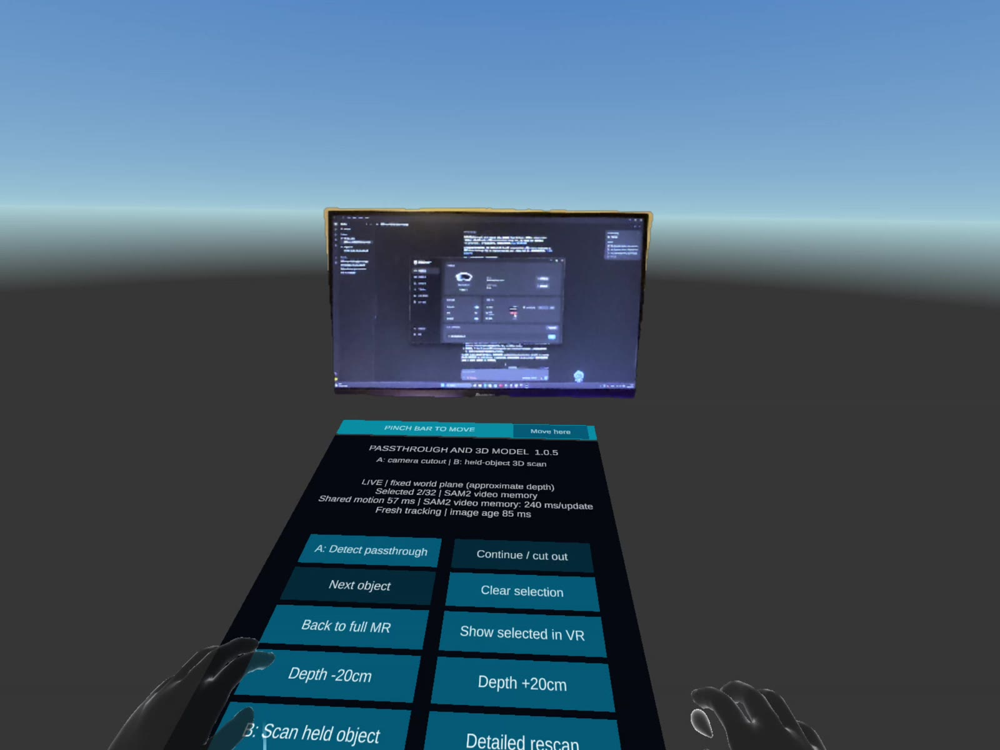
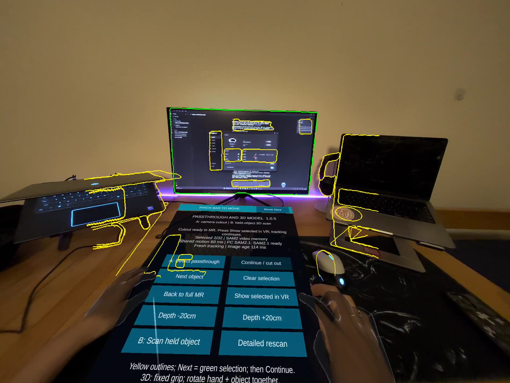
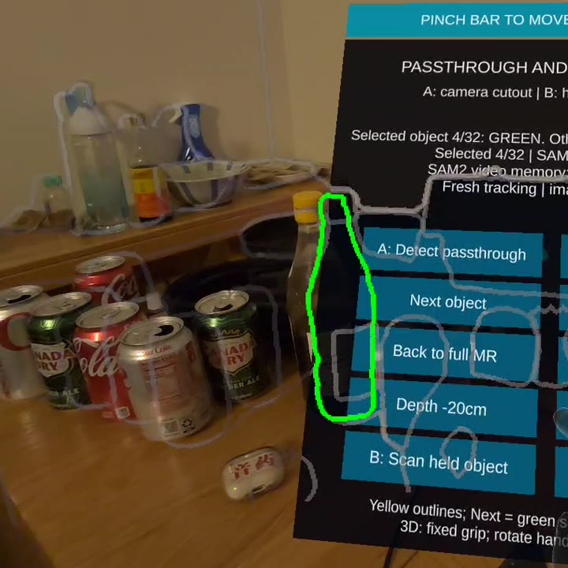
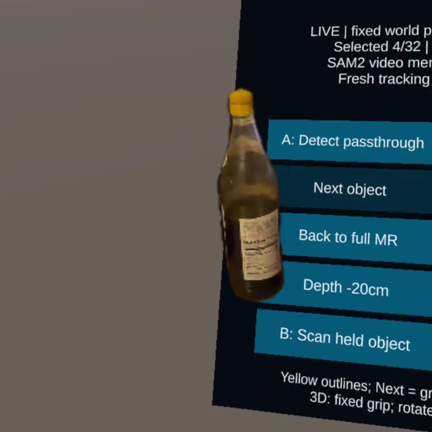

One object stays
Everything else goes.
Same view, two modes. Drag to compare the full room with VR where only the selected monitor is still real.


Mixed realitySelective VRHow it works
Detect, select, show.
Detect.
SAM 2, Meta's promptable segmentation model, extracts the contours of real objects in the headset camera view.
Select.
The user cycles through segmented objects until the one they want is selected in green.
Show in VR.
Its contour is projected into 3D with depth and anchored to the room. The rest becomes VR; the object stays live.
Precise in clutter
One bottle, a crowded desk.
Cans, cups and small bottles sit inches apart. SAM 2.1 traces only the bottle's edge, and in VR the bottle stays, label and all.


Under the hood
Real time, on a PC over USB.
SAM 2.1Segments the camera view into object outlines.
~220 msPer mask update, tracked between frames.
32Objects outlined in one desk scan.